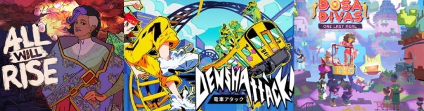

This weekend I played a small amount of game demos!
I say small because I've been kinda Paranormasight 2 pilled because...ya know...it just came out
I haven't met this guy yet, but I'm so excited!!
Anyway a lot of games I've been shown by my gf or the algorithm have recently gotten demos!!
I first played some Denshattack! It's a really fun and silly game where your do tricks with a train. Honestly, I suck at this game! Only because you know, it's a short demo and a lot was happening at once, so I was struggling to react in time. Either way it was so fun for my eyeballs and the world/level designs kept me thoroughly engaged.
I'll have to go back to this demo for the little train "skate park" to get better, but I do like the premise!
Afterwords, I let myself start the Dosa Divas demo! As someone who got to play Thirsty Suitors a while back, I had nothing but high hopes for Outerloop's new game. Dosa Divas focuses on sisters Amari and Samara trying to go home to see their parents in a world where people aren't cooking anymore thanks to the coporation Lina meals feeding them slop. They also get around in a giant robot named Goddess who can take them to a special cooking dimension and (more noteably) naruto run. The usage of mechanics from Thirsty Suitors in new interesting ways was enticing. I also appreciated that the cooking was shortened for how often you need to cook in this game. I did like the cooking sections in Thirsty Suitors and think it needed to be this fun/sometimes tense thing that lasted a bit. I was just nervous for how it would be in this game when I saw the timed cooking mechanics come into play (It takes a bit for me to get used to the timing and I feel bad when I serve bad food!)
Nonetheless, I got the hang of it eventually and was excited that this narrative is another family drama but set in a more futuristic world with diva bots? So sick. Goddess is definitely my favorite. I also love that the villain is the youngest sister because everytime I had to hear Lina's dumb song in the game I was like "yep, this definitely feels like little sister anger." As someone with three younger siblings, I'm SUCH a sucker for sibling stories. The RPG elements are also satisfying especially now that there's multiple people to use to fight! (And Goddess being my favorite to use).
Anyway this will definitely be a day one purchase and I cheered seeing that it's coming out this April!! So glad that the funding from the Among Us devs actually helped some indies like. If only other people funded indies like them!!
Last but not least, I played All will Risethis weekend.
Once the Kickstarter went up I immediately backed the game. Court games that aren't the typical Ace Attorney format are some of my faves, especially ones that actually has leftist ideology. The game also tackles on some pretty tough themes, I mean, the premise itself is all about fighting big corporations killing our Earth, specifically the river that is worshipped and helps the people of Mizuris live.
Gameplay wise it's an interesting card game that focuses on space/placement of evidence and argumentative claims. Besides keeping watch of your card placement, you also have to keep watch of stats that can make or break the entire conversation. It adds a nice difficulty curve when you have to break someone when their stats are high or get your own stats high after doing story missions that bring you down.
Honestly, it just does a good job at making me think about work/life balance and burn out. The fact that burnout is an actual thing players can be pushed to makes me go whoa! Yeah I can't be doing that to my coworkers no matter how important these tasks are. Without the fuel needed to keep going the car is not gonna go anywhere so- Overall great game that I'm MANIFESTING gets funded plzplzplz *fingers crossed*